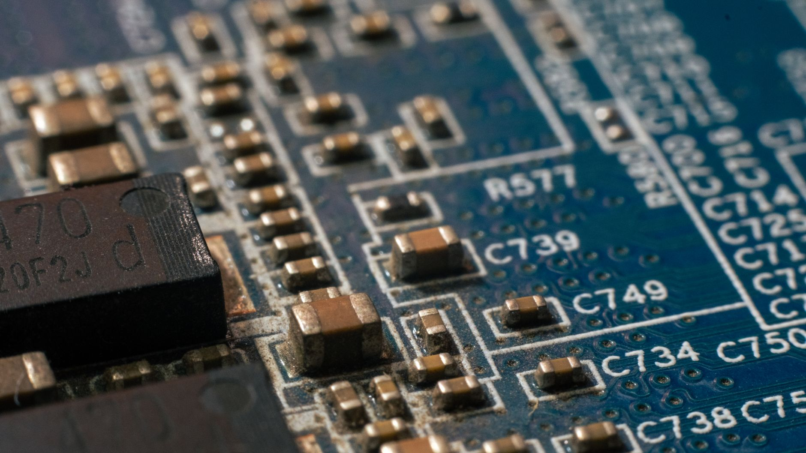

탄탈럼 납기 26주 고착, AI 서버 증설 실제 병목 확인

탄탈럼 커패시터 납기는 2023년 평균 12~14주에서 2025년 3분기 현재 26주로 2배 이상 늘어났다. 삼성전기·Vishay·AVX(KYOCERA 계열)·KEMET 4개사 모두 동일한 납기를 고지하고 있어 공급사 교체로 해결할 수 없는 구조적 병목임이 확인된다.
탄탈럼의 원광 콜탄(coltan)은 콩고민주공화국(DRC)이 세계 생산량의 약 40%를 점유하고, 정제·분말 가공은 중국이 전체 공급의 60% 이상을 담당한다. 미국이 2024년 DRC 광물 거래에 대한 분쟁광물 실사 요건을 강화하면서 콩고산 원광의 추적 비용이 톤당 약 8,000달러 추가 발생하고 있다.
AI 서버 1랙(42U 기준)에 탄탈럼 커패시터가 평균 3,200~4,500개 사용된다. 글로벌 데이터센터 신규 투자가 2025년 기준 연 3,000억 달러를 넘어서면서 탄탈럼 수요는 전년 대비 약 22% 증가했으나, 공급 증가율은 7%에 머물러 수급 갭이 15%p 벌어진 상태다.
전장(車) 전자화 가속도 병목을 심화한다. 전기차 1대에 탄탈럼 커패시터가 내연기관 차 대비 2.8배 투입되며, 완성차 업체들이 중국산 전장 부품을 대체하는 과정에서 탄탈럼 기반 부품 수요가 추가로 집중되고 있다. ADAS ECU 단품 기준 탄탈럼 함량은 기판 총 커패시터 가치의 35~45%에 달한다.
탄탈럼 납기 26주는 AI 인프라 투자 사이클과 충돌한다. 하이퍼스케일러들은 통상 서버 증설을 분기 단위로 계획하지만, 탄탈럼 커패시터 조달만으로 이미 2분기를 소비하게 됐다. 이는 데이터센터 운영 기업의 CapEx 집행 속도를 실질적으로 제약하며, 엔비디아 GPU 공급 부족과는 별개의 독립적 병목으로 작동한다.
더 심각한 문제는 탄탈럼이 '눈에 띄지 않는 소재'라는 점이다. 갈륨·게르마늄처럼 정부 간 규제 협상 테이블에 오르지 않고, 분쟁광물 이슈로 묻혀있다. 공급망 담당자들이 GPU·HBM에 집중하는 동안 탄탈럼은 조용히 AI 서버 증설의 실질 병목이 됐다. 납기 재정상화 시점은 2026년 하반기 이전으로 보기 어렵다.
탄탈럼 소재 대체재인 도전형 세라믹 커패시터(MLCC) 공급사가 반사이익을 얻는다. 삼성전기는 MLCC 캐파의 15~20%를 탄탈럼 대체 수요로 흡수하고 있으며, 무라타·TDK도 동일 기조다. MLCC는 탄탈럼 대비 정전 용량 밀도가 낮지만, AI 서버 전원부 설계를 변경하면 30~40% 대체가 기술적으로 가능하다.
탄탈럼 재활용·도시광산 기업도 부상한다. 스크랩 탄탈럼 가격은 2023년 대비 약 35% 상승했으며, 독일 H.C. Starck(현 AMG Advanced Metallurgy)와 일본 Ulvac이 재생 분말 공급을 확대하고 있다. 한국에서는 소수 중견 기업이 이 시장에 진입을 모색 중이다.
납기 미확보 상태로 서버 발주를 집행한 국내외 IT 서비스 기업들이 직격탄을 맞는다. 국내 클라우드 3사(KT클라우드·네이버클라우드·NHN클라우드)의 2025년 GPU 서버 증설 계획 중 최소 20~30%는 탄탈럼 커패시터 조달 지연으로 일정이 밀릴 가능성이 있다.
전장 부품 교체를 서두르는 한국 1·2차 협력사들도 피해를 입는다. GM·포드의 중국산 전장 부품 퇴출 일정에 맞춰 2026년 납품을 목표로 설계 변경에 착수했으나, 탄탈럼 커패시터 확보 지연이 양산 인증 일정을 최소 1분기 이상 지연시킬 위험이 있다.
탄탈럼 커패시터를 AI 서버·전장 BOM에 포함한 기업이라면 지금 당장 설계 팀과 '탄탈럼 제로(zero)' 대안 BOM을 병행 작성해야 한다. MLCC 대체 가능 부위를 기판 레이아웃 단계에서 확정하는 데 8~12주가 걸리므로, 탄탈럼 납기 26주와 합산하면 실질 리드타임은 34~38주에 달한다.
장기 계약 없이 현물 시장에만 의존하면 2026년 상반기까지 납기 35주 이상 시나리오에 노출된다. 지금 가능한 최선은 2026년 물량의 50% 이상을 4분기 내 선도 계약으로 확보하는 것이다. 가격 프리미엄(현물 대비 약 12~15%)은 서버 증설 지연 비용 대비 합리적인 수준이다.
재생 탄탈럼 분말(AMG, Ulvac, Global Advanced Metals 제품) 인증을 병행 추진하면 원광 조달 불확실성을 약 30% 줄일 수 있다. 국내 커패시터 조립사가 재생 분말을 직접 가공하는 수직계열화도 검토할 시점이다.
실제 조달 현장에서는 — 탄탈럼 커패시터 발주서를 FAX로 내고 2주 뒤 납기 확인 전화를 돌리는 구식 방식이 아직도 남아 있는데, 이 소재는 지금 그런 여유가 없다. 공급사 3곳 이상에 동시 샘플 발주를 넣고 납기 응답 속도로 우선협력사를 선정하는 방식으로 전환하고, 분기별 수요 예측을 공급사와 공유하는 VMI(공급자 관리 재고) 계약 전환을 즉시 실행해야 한다.
이 포스팅은 쿠팡 파트너스 활동의 일환으로 수수료를 제공받습니다.